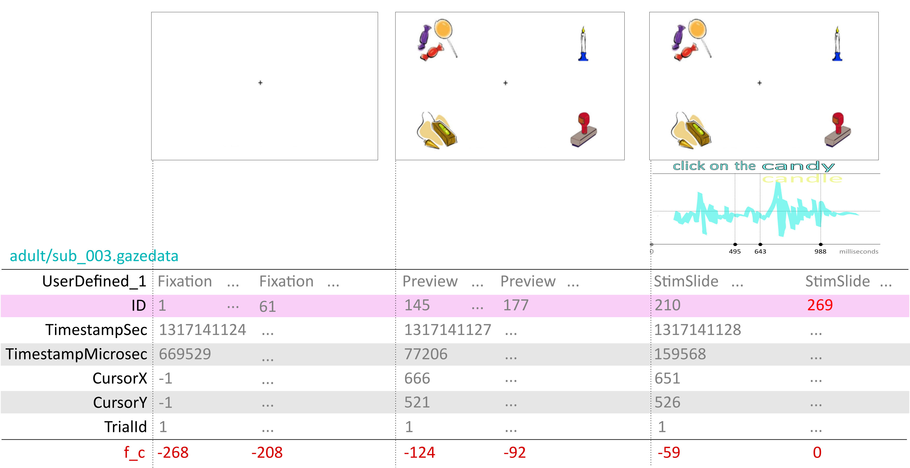

| variable | type | description |
|---|---|---|
| ID | arbitrary value uniquely identifying each frame within subject | |
| TETTime | (ignored) | |
| RTTime | (ignored) | |
| CursorX | horizontal point of gaze in pixels | |
| CursorY | vertical point of gaze in pixels | |
| TimestampSec | timestamp in seconds | |
| TimestampMicrosec | millisecond portion of timestamp (cycles around) | |
| XGazePosLeftEye | (ignored) | |
| YGazePosLeftEye | (ignored) | |
| XCameraPosLeftEye | (ignored) | |
| YCameraPosLeftEye | (ignored) | |
| DiameterPupilLeftEye | (ignored) | |
| DistanceLeftEye | (ignored) | |
| ValidityLeftEye | (ignored) | |
| XGazePosRightEye | (ignored) | |
| YGazePosRightEye | (ignored) | |
| XCameraPosRightEye | (ignored) | |
| YCameraPosRightEye | (ignored) | |
| DiameterPupilRightEye | (ignored) | |
| DistanceRightEye | (ignored) | |
| ValidityRightEye | (ignored) | |
| TrialId | arbitrary value uniquely identifying each trial within a subject (same as t_id) | |
| UserDefined_1 | phase of the trial (Fixation, Preview, StimSlide) |
1 Import, epoching, and time-alignment
The overall task here is to scrape out the data we want to use from each trial (epoching) and align the frame counters for all trials to the disambiguation point for the particular audio stimulus that was played on that trial (time-alignment). In other words, the disambiguation point should be the temporal “origin” (zero point) for the timeline on each trial.

1.1 Data import
For the first part of pre-processing, we will load the eye data into our R session using functions from the {readr} package, which is one of many packages that is part of the {tidyverse} meta-package. The .gazedata files from the Tobii eyetracking system are in .tsv or Tab Separated Values format, for which we use read_tsv().
Before we can perform epoching and time-alignment, we have to import and clean up the .gazedata files. These are 42 adult data files and 41 child data files located in the adult and child subdirectories of data-raw/. These files follow the naming convention data-raw/adult/sub_XXX.gazedata and data-raw/child/sub_XXX.gazedata where the XXX part of the filename the unique integer identifying each subject, which corresponds to sub_id in the subjects table.
The raw gazedata files include a lot of unnecessary information. We’ll need to scrape out the data that we need and convert the XXX value from the filename into a sub_id variable in the resulting table. The source files have the format below.
1.1.1 Activity: One Subject
Read in the Tobii eyetracking data for a single subject from the datafile data-raw/adult/sub_003.gazedata, and convert it to the format below.
# A tibble: 16,658 × 7
sub_id t_id f_id sec x y phase
<int> <int> <int> <dbl> <int> <int> <chr>
1 3 1 145 1317141127. 666 521 Preview
2 3 1 146 1317141127. 649 442 Preview
3 3 1 147 1317141127. 618 507 Preview
4 3 1 148 1317141127. 645 471 Preview
5 3 1 149 1317141127. 632 471 Preview
6 3 1 150 1317141127. 645 536 Preview
7 3 1 151 1317141127. 651 474 Preview
8 3 1 152 1317141127. 643 541 Preview
9 3 1 153 1317141127. 628 581 Preview
10 3 1 154 1317141127. 643 532 Preview
# … with 16,648 more rowsHere, we have renamed TrialId to t_id, which is the name it takes throughout the rest of the database. We have also renamed CursorX and CursorY to x and y respectively. We have also renamed ID to f_id (frame id) and UserDefined_1 to phase. We also exclude any frames from the phase where UserDefined_1 == "Fixation", because these frames are not informative, and doing so reduces the size of the data we need to import.
Hint: Importing only those columns you need
Use the col_types argument to read_tsv() and the cols_only() specification.
For instance, something like:
read_tsv("data-raw/adult/sub_003.gazedata",
col_types = cols_only(ID = col_integer(),
# [..etc]
),
#.. other args to read_tsv,
)Type ?readr::cols_only in the console to learn more about specifying columns during data import.
Hint: Extracting the subject id number
You can use the id argument to read_tsv() to specify the name of a variable in the resulting data frame that has the filename as its value.
You can then create a new variable using mutate() that extracts the XXX substring (positions 20-22 of the string) and then converts it to an integer.
read_tsv("data-raw/adult/sub_003.gazedata",
id = "filename",
# other args to read_tsv()...
) %>%
mutate(sub_id = substr(filename, 20, 22) %>% as.integer()) # %>%
## rest of your pipeline..
Solution
library("tidyverse")
## make sure that your working directory is properly set!
read_tsv("data-raw/adult/sub_003.gazedata",
col_types = cols_only(ID = col_integer(),
TrialId = col_integer(),
CursorX = col_integer(),
CursorY = col_integer(),
TimestampSec = col_integer(),
TimestampMicrosec = col_integer(),
UserDefined_1 = col_character()),
id = "filename") %>%
## convert XXX to sub_id
mutate(sub_id = substr(filename, 20, 22) %>% as.integer(),
sec = TimestampSec + TimestampMicrosec / 1000000) %>%
select(sub_id, t_id = TrialId, f_id = ID,
sec, x = CursorX, y = CursorY,
phase = UserDefined_1) %>%
filter(phase != "Fixation")1.1.2 Activity: All Subjects
Now adapt the code that you wrote above to load in all 83 into a single table, which should have the same format as for the data you imported for subject 3 above.
Tip
The readr functions like read_tsv() make it easy to read in multiple files. All you need to do is to provide a vector of filenames as the first argument.
For example, read_tsv(c("file1.tsv", "file2.tsv")) will read both file1.tsv and file2.tsv and bind together the rows imported from both files in the result.
Hint: How do I get a vector of all the files in a directory?
The dir() function for base R can be used to list files. Examples:
dir("data-raw")[1] "adult" "child" "locations.csv"
[4] "screens.csv" "speech-timings.csv" "stimuli.csv"
[7] "subjects.csv" "trials.csv" adults <- dir("data-raw/adult", full.names = TRUE)
adults [1] "data-raw/adult/sub_001.gazedata" "data-raw/adult/sub_002.gazedata"
[3] "data-raw/adult/sub_003.gazedata" "data-raw/adult/sub_004.gazedata"
[5] "data-raw/adult/sub_005.gazedata" "data-raw/adult/sub_006.gazedata"
[7] "data-raw/adult/sub_007.gazedata" "data-raw/adult/sub_008.gazedata"
[9] "data-raw/adult/sub_009.gazedata" "data-raw/adult/sub_010.gazedata"
[11] "data-raw/adult/sub_011.gazedata" "data-raw/adult/sub_012.gazedata"
[13] "data-raw/adult/sub_013.gazedata" "data-raw/adult/sub_014.gazedata"
[15] "data-raw/adult/sub_015.gazedata" "data-raw/adult/sub_016.gazedata"
[17] "data-raw/adult/sub_017.gazedata" "data-raw/adult/sub_018.gazedata"
[19] "data-raw/adult/sub_019.gazedata" "data-raw/adult/sub_020.gazedata"
[21] "data-raw/adult/sub_021.gazedata" "data-raw/adult/sub_022.gazedata"
[23] "data-raw/adult/sub_023.gazedata" "data-raw/adult/sub_024.gazedata"
[25] "data-raw/adult/sub_025.gazedata" "data-raw/adult/sub_026.gazedata"
[27] "data-raw/adult/sub_027.gazedata" "data-raw/adult/sub_028.gazedata"
[29] "data-raw/adult/sub_029.gazedata" "data-raw/adult/sub_030.gazedata"
[31] "data-raw/adult/sub_031.gazedata" "data-raw/adult/sub_032.gazedata"
[33] "data-raw/adult/sub_033.gazedata" "data-raw/adult/sub_034.gazedata"
[35] "data-raw/adult/sub_035.gazedata" "data-raw/adult/sub_036.gazedata"
[37] "data-raw/adult/sub_037.gazedata" "data-raw/adult/sub_039.gazedata"
[39] "data-raw/adult/sub_040.gazedata" "data-raw/adult/sub_041.gazedata"
[41] "data-raw/adult/sub_042.gazedata" "data-raw/adult/sub_043.gazedata"
Solution
## get .gazedata filenames
adults <- dir("data-raw/adult", full.names = TRUE)
children <- dir("data-raw/child", full.names = TRUE)
edat <- read_tsv(c(adults, children),
col_types = cols_only(ID = col_integer(),
TrialId = col_integer(),
CursorX = col_integer(),
CursorY = col_integer(),
TimestampSec = col_integer(),
TimestampMicrosec = col_integer(),
UserDefined_1 = col_character()),
id = "filename") %>%
mutate(sub_id = substr(filename, 20, 22) %>% as.integer(),
sec = TimestampSec + TimestampMicrosec / 1000000) %>%
select(sub_id, t_id = TrialId, f_id = ID,
sec, x = CursorX, y = CursorY,
phase = UserDefined_1) %>%
filter(phase != "Fixation")
edat# A tibble: 1,899,013 × 7
sub_id t_id f_id sec x y phase
<int> <int> <int> <dbl> <int> <int> <chr>
1 1 1 272 1317113393. 628 523 Preview
2 1 1 273 1317113393. 634 529 Preview
3 1 1 274 1317113393. 633 519 Preview
4 1 1 275 1317113393. 644 531 Preview
5 1 1 276 1317113393. 637 520 Preview
6 1 1 277 1317113393. 635 515 Preview
7 1 1 278 1317113393. 636 519 Preview
8 1 1 279 1317113393. 638 518 Preview
9 1 1 280 1317113393. 642 519 Preview
10 1 1 281 1317113393. 638 518 Preview
# … with 1,899,003 more rows1.2 Epoching and time-alignment
The Tobii eyetracker recorded data at a rate of 60 Hertz (i.e., 60 frames per second, or one frame every 1/60th of a second.) For each trial, the frame counter (ID, which we renamed to f_id) starts at 1 and increments every frame. This is not very useful because we need to know when certain stimulus events occurred, and these will take place at a different frame number for every trial, depending on the timing of the speech events of the stimulus for that trial. We need to re-define the ‘origin’ of the eye-tracking data. In this study, we used the ‘disambiguation point’, which is the point in the word where the signal distinguishes between two competing lexical items (e.g., candy and candle).
As ?fig-epoching shows, each trial had three phases, a Fixation, Preview, and StimSlide phase, which are indexed by the variable phase. Playback of a soundfile with a pre-recorded speech stimulus began simultaneously with the onset of the StimSlide phase.
For each trial (uniquely identified by sub_id and t_id), we are going to need to do two things to time-align the eye data to the disambiguation point.
Find out what sound was played and the timing of the disambiguation point within that soundfile, as measured from the start of the file.
Figure out the frame number corresponding to the start of the
StimSlidephase and then adjust by the amount calculated in the previous step.
1.2.1 Activity: Disambiguation Point
Create the table below from the raw data, which has information about the onset of the disambiguation point for each trial. Store the table as origin_adj.
You may wish to consult Appendix A to see what tables the values in the table below have been are drawn from. You’ll need to import these tables into your session. All of these tables have the extension .csv, which indicates they are in Comma Separated Values format. The ideal way to import these files is to use read_csv() from the {readr} package.
# A tibble: 5,644 × 4
sub_id t_id sound disambig_point
<int> <int> <chr> <int>
1 1 1 Tpelican.wav 1171
2 1 2 Tpumpkin.wav 1079
3 1 3 pencil.wav 810
4 1 4 paddle.wav 881
5 1 6 Tbalcony.wav 1012
6 1 7 Tnapkin.wav 1069
7 1 11 Tflamingo.wav 1150
8 1 13 Tangel.wav 1036
9 1 14 Tparachute.wav 1046
10 1 16 Tmushroom.wav 1062
# … with 5,634 more rows
Solution
trials <- read_csv("data-raw/trials.csv",
col_types = "iiiiii")
stimuli <- read_csv("data-raw/stimuli.csv",
col_types = "iiciccc")
speech <- read_csv("data-raw/speech-timings.csv",
col_types = "ciii")
origin_adj <- trials %>%
inner_join(stimuli, "iv_id") %>% # to get `sound`
select(sub_id, t_id, sound) %>%
inner_join(speech, "sound") %>% # to get the timings
select(-article, -noun)1.2.2 Activity: Onset of StimSlide
Now let’s do part 2, where we find the value of f_id for the first frame of eyedata for each trial following the onset of the StimSlide phase. We should have a table that looks like the one below, with one row for each trial, and where f_ss is the value of f_id for the earliest frame in the StimSlide phase.
# A tibble: 7,385 × 3
sub_id t_id f_ss
<int> <int> <int>
1 1 1 338
2 1 2 729
3 1 3 1124
4 1 4 1443
5 1 5 1795
6 1 6 2300
7 1 7 2593
8 1 8 3348
9 1 9 3874
10 1 10 4331
# … with 7,375 more rows
Solution
## figure out the f_id for the earliest StimSlide frame
origin_frames <- edat %>%
filter(phase == "StimSlide") %>%
group_by(sub_id, t_id) %>%
summarise(f_ss = min(f_id),
.groups = "drop")
origin_frames1.2.3 Activity: Combine origins
Now that we have the first frame of StimSlide and the adjustment we have to make in milliseconds for the disambiguation point, combine the tables and calculate f_z, which will represent the “zero points” in frames for each trial. Store the resulting table in origins.
# A tibble: 5,643 × 5
sub_id t_id f_ss disambig_point f_z
<int> <int> <int> <int> <int>
1 1 1 338 1171 408
2 1 2 729 1079 794
3 1 3 1124 810 1173
4 1 4 1443 881 1496
5 1 6 2300 1012 2361
6 1 7 2593 1069 2657
7 1 11 4699 1150 4768
8 1 13 5395 1036 5457
9 1 14 5893 1046 5956
10 1 16 6811 1062 6875
# … with 5,633 more rows
Hint: How to convert milliseconds to frames of eye data
There are 60 frames per second, so 60 frames per 1000 milliseconds.
So to convert from milliseconds to frames:
f_z = 60 * ms / 1000
For example, if you have 500 ms, then 60 * 500 / 1000 = 30.
Solution
origins <- origin_frames %>%
inner_join(origin_adj, c("sub_id", "t_id")) %>%
mutate(f_z = round(f_ss + 60 * disambig_point / 1000) %>%
as.integer()) %>%
select(-sound)1.2.4 Activity: Time-align
Now we’re ready to calculate a new frame index on our eye data (edat), f_c, which is centered on the zero point, f_z. The resulting table should be called epdat and have the following structure.
# A tibble: 1,341,405 × 7
sub_id t_id f_id f_z f_c x y
<int> <int> <int> <int> <int> <int> <int>
1 1 1 272 408 -136 628 523
2 1 1 273 408 -135 634 529
3 1 1 274 408 -134 633 519
4 1 1 275 408 -133 644 531
5 1 1 276 408 -132 637 520
6 1 1 277 408 -131 635 515
7 1 1 278 408 -130 636 519
8 1 1 279 408 -129 638 518
9 1 1 280 408 -128 642 519
10 1 1 281 408 -127 638 518
# … with 1,341,395 more rows
Solution
epdat <- edat %>%
inner_join(origins, c("sub_id", "t_id")) %>%
mutate(f_c = f_id - f_z) %>%
select(sub_id, t_id, f_id, f_z, f_c, x, y)1.3 Save the data
We’ve reached a stopping point. We’ll want to save the epoched data so that we can use that as our starting point for the next preprocessing stage. We’ll remove the variables f_id and f_z because we no longer need them. We’ll also keep 1.5 seconds (90 frames) before and after the disambiguation point for each trial.
## if we haven't made a "data-derived" directory, do so now
if (!dir.exists("data-derived")) dir.create("data-derived")
epdat %>%
filter(f_c >= -90L, f_c <= 90L) %>%
select(-f_id, -f_z) %>%
saveRDS(file = "data-derived/edat-epoched.rds")